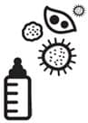

Pek faideli bir alet: Sterilizatör
Birine bebek hediyesi alacaksam bu aletten alırım. Beni en az üç yıl, her gün iyi dileklerle ansın. Yerde yetişen bir bebek eşyası olan emzikleri anlattık. Bir de biberonlar var tabi. Biberonu yıkamak bile ayrı zanaat arkadaş. Teçhizatı var. Biberon yıkama fırçaları yapmışlar mesela. Biberonun içine elin girmiyor ya, onunla yıkıyorsun. Faydalı, alınabilir. Çocuklar için, kimyasal içermeyen özel bulaşık deterjanları var. Pek faydalı, alınabilir. Biberon kurutucuları var. Bulaşıklığın oraya koyuyorsun, biberonları üzerindeki sopalara geçiriyorsun vs. Bundan almadım, gereksiz göründü. Biberonları yıkadık, sıcak suyla iyice duruladık. Ama yıkamak yetmiyor, steril hale getirmek lazım dediler. Eee, eski usul kaynatalım dedik. Koyduk ocağın üstüne bir tencere, fokur fokur kaynıyor, içine saldık biberonları, bir taşım kaynattık. İçinden hemen alamıyorsun öyle, su sıcak. Kepçeyle yakalıyorsun emzikleri suyun içinden. Sonra onları kurutuyorsun. Ooo tamam başardık derken, bebek bir daha acıkıyor. Uleeeen daha şimdi yıkadım, kaynattım, kuruttum ne çabuk geçti zaman diyorsun ki, sen onu derken diğer beslenme geliyor. İşin yoksa akşama kadar biberon yıkayıp kaynat. İkizler doğduğunda ilk hafta biberon yıkayıp kaynattım. Sonra baktım başa çıkılmıyor, sterilizatör diye bir şey duymuştum, gittim ondan aldım. Aman ne güzel aletmiş yahu. Koy içine yıkadığın biberonu, emziği, bas tuşuna temizlesin. Biberonu içinden almazsan üç saat steril kalıyormuş.
Bunun da bir sürü çeşidi var, mikrodalgaya konarak çalışanları var, buharlıları, kurutma fonksiyonu olanları, aynı zamanda mama ısıtıcı görevi görenleri vs. Ben en basit olanını seçtim. Yıkadığın biberonu içine yerleştir, su haznesine biraz su koy, kapağı kapat ve düğmeye bas. Güzel alet, çok verimli kullandık. Doktorlar ilk 6 ay için öneriyorlar. Bizim evde, Name’nin biberonlar steril olurken ikizlerinkiler de arada kaynadı, bilerek kaynatmadık!
İlk yıl tatile giderken onu da yanımızda götürdük. İkinci yıl ben gelmeyeyim, çocuklar büyüdü idare edersiniz dedi, götürmedik. Ek gıdaya geçtiler, tabaklarını, kaşıklarını steril ettik içinde. Suyla yıkayamadığımız minik oyuncaklarımızı koyduk. Büyüdüler diş fırçalarımızı steril eder olduk. Üç yıl her gün birkaç kez çalıştırdık. Derken dayanamadı geçen hafta bozuldu. Dur unutmayayım da yarın tamire götüreyim.